Первый вдох
Я увидел тебя, и внутри стало тихо. Как будто всё это время я просто ждал.
нажми ▶ — включится звук
Для тебя
Я бы умер за тебя

Знакомство
Меня зовут Руслан. Я сделал для тебя маленькое кино про тебя.
Листай вниз36 кадров · одна ты
Играет «Die For You». Свет приглушён, город не спит, а я листаю тебя кадр за кадром.
Когда гаснет день, ты становишься ярче.
Я увидел тебя, и внутри стало тихо. Как будто всё это время я просто ждал.
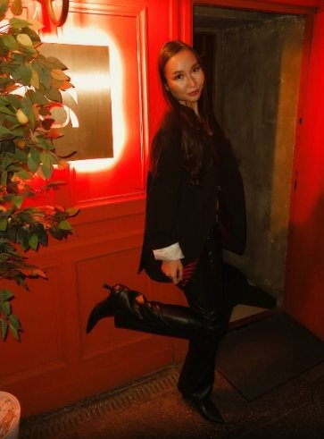
С тобой страшно и хорошо одновременно. Я выбираю это каждый раз.
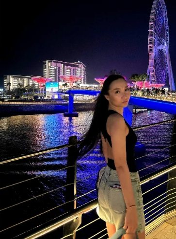
Ты оборачиваешься, и мир гаснет сам. Мне больше ничего не нужно видеть.
Там, где тепло, мне хочется остановить время.
Рядом с тобой даже молчание звучит как признание. Я слушаю его часами.
Ты делаешь любой день золотым, сама того не замечая. А я замечаю каждый раз.
Не нужно искать место, где хорошо. Достаточно знать, что ты где-то рядом.
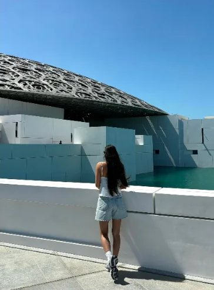
Ты смотришь вдаль, а я смотрю на тебя. Это мой любимый способ быть счастливым.
У тебя взгляд, от которого не прячутся. Я и не пытаюсь.
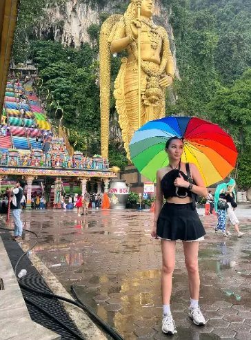
Ты как гроза, после которой всё дышит. И мне нравится под ней промокать.
С тобой время перестаёт быть врагом. Оно просто замедляется, чтобы я успел всё запомнить.
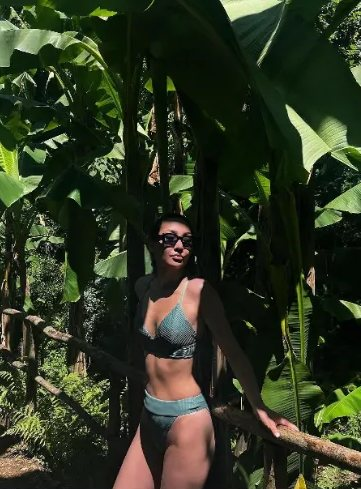
В тебе есть то, что нельзя приручить. Я и не хочу. Я хочу быть рядом, когда ты сама решишь остаться.
Ты приходишь как ветер: сначала не веришь, потом не можешь без него. Я уже не могу.
Ты стоишь так спокойно, будто мир держится на тебе. Для меня так и есть.
С тобой даже холод становится нежным. Я учусь греться о твой голос.
Ты рассказываешь не всё, и в этом вся магия. Я готов узнавать тебя всю жизнь.
Скажи слово, и я поеду за тобой. Дорога не важна, важна только ты в конце.
Ты знаешь, что делаешь со мной. Просто не останавливайся.
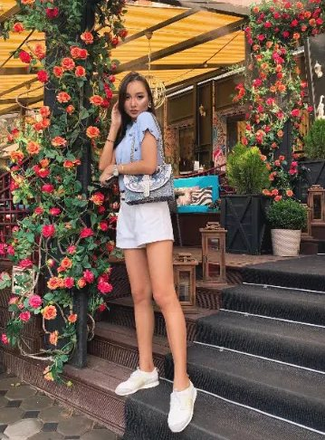
Ты как мелодия, которую узнаёшь с первой ноты. И потом уже не можешь отпустить.
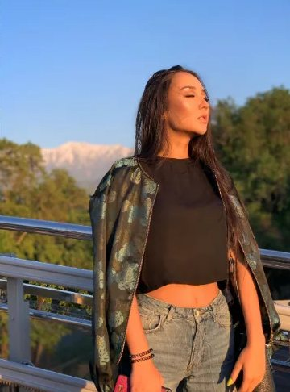
Когда ты рядом, я перестаю бояться, что день закончится. Ведь у меня есть ты.
Достаточно одного взгляда через плечо. И я снова забываю дорогу домой.
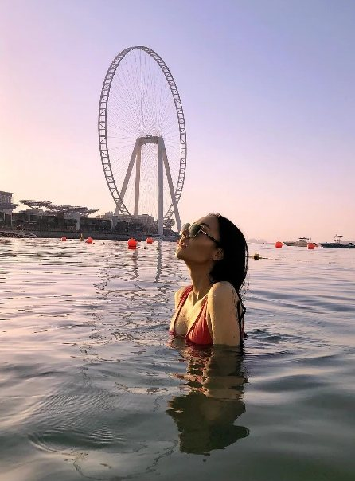
Рядом с тобой я растворяюсь, как свет в воде. И мне нисколько не жаль.
А потом ты просто идёшь по городу, и город замолкает.
Ты улыбаешься едва заметно. Мне хватает этого на всю ночь.
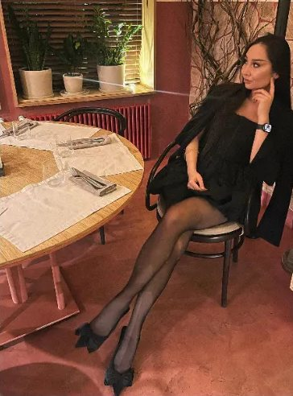
Весь мир давно перестал существовать. Остались только ты и то, как я на тебя смотрю.
В тебе спокойная сила, от которой хочется стать лучше. Я стараюсь.
С тобой утро начинается не с кофе, а с мысли о тебе. И так каждый день.
Ты как мечта, которую боишься назвать вслух. А я называю. Тихо, чтобы никто не услышал.
Мы можем никуда не ехать. Рядом с тобой я уже там, где хочу быть.
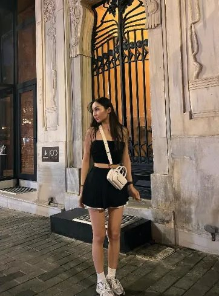
Ты открываешь двери, которые я считал закрытыми. Во мне в том числе.
Холодно, поздно, пусто. А мне тепло, потому что ты есть.
Я пошёл бы за тобой хоть всю ночь. И ни разу не спросил бы, куда.
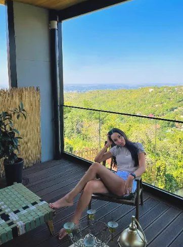
С тобой я наконец умею ничего не делать. И это лучшее, что со мной случалось.
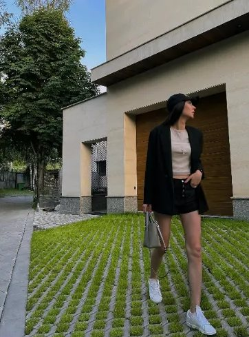
Ты отводишь взгляд, а я не могу отвести свой. Кажется, так и должно быть.
Ты как красный свет: останавливаешь всё вокруг. И я не жалею ни секунды.
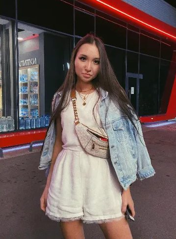
От тебя кружится голова, как от первого вдоха после долгой воды. Я готов тонуть снова.
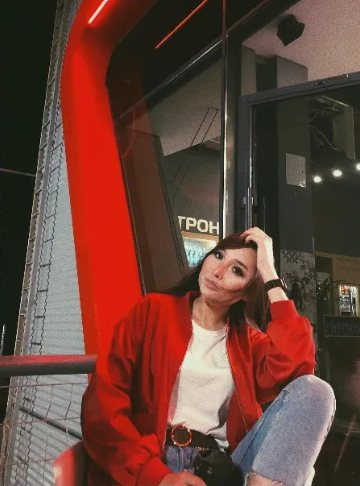
Ты горишь так красиво, что я не боюсь обжечься. Пусть.
Ты кажешься далёкой, как первый снег. Но я иду к тебе, шаг за шагом.
Все 36 кадров
Если оставить только одно слово на все кадры сразу, то это
Свидание
Ты расскажешь про поездку и концерт, а я послушаю. Выбери, как тебе удобнее.
Когда
Куда
Твой ответ